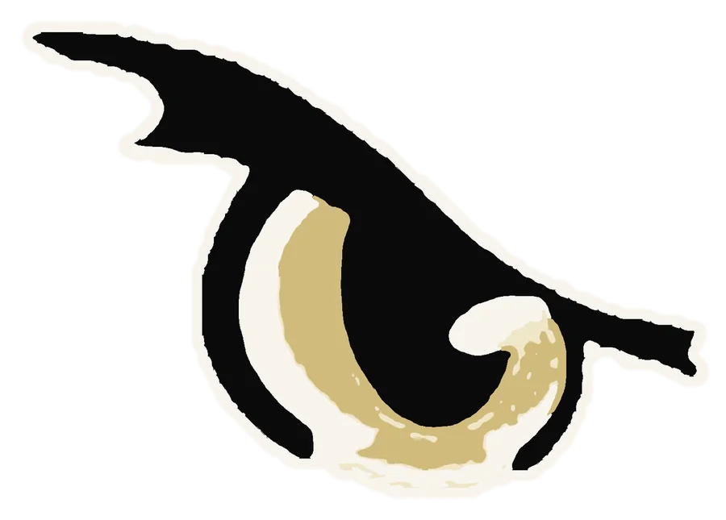

←
主選單

tych3n trading note
直播連結
Session 01
支撐壓力
觀看直播
→
Session 02
趨勢與結構
觀看直播
→
Session 03
突破與假突破
觀看直播
→
Session 04
流動性與掃止損
觀看直播
→
Session 05
技術指標的用法
觀看直播
→
Session 06
多週期分析
觀看直播
→
Session 07
制定自己的交易系統
觀看直播
→
Session 08
中繼型態教學
觀看直播
→
Session 09
頂底型態判斷
觀看直播
→
Session 10
交易其實是機率遊戲
觀看直播
→
Session 11
如何找到自己交易的優勢
觀看直播
→
Session 12
形態回踩的判斷
觀看直播
→
Session 13
如何建立一個setup
觀看直播
→
tych3n trading note